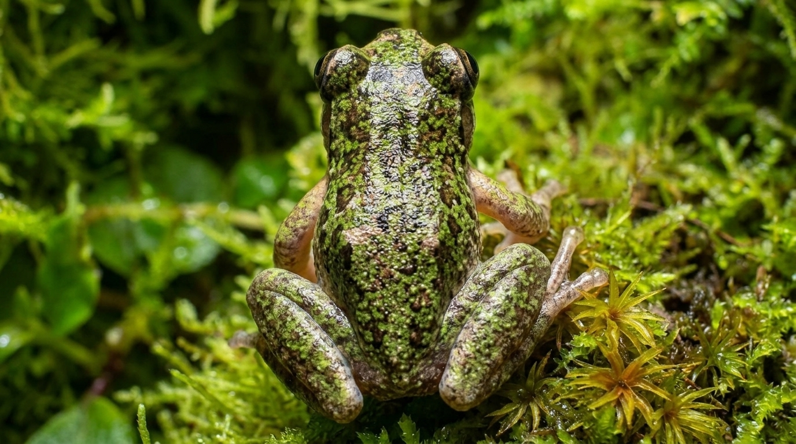

Guía Académica • Zona Los Santos
Guía Taxonómica - Anfibios
📍 Distribución: San Lorenzo de Tarrazú
🌡️ Nicho Térmico: 19°C
💧 Humedad: 95%

Tamaño diminuto
Garganta translúcida
Endémica de altura
Isthmohyla nacientes
Especie:
Rana de las Nacientes
Hábitat (Físico):
Vegetación arbustiva y riachuelos en zona cafetalera.
Nicho Ecológico (Rol):
Depredador nocturno de insectos y bioindicador.
🧬 Morfología:
Tamaño <4cm, coloración verdosa críptica.
🦉 Etología:
Hábitos nocturnos y arborícolas.
🌱 Reproducción:
Puesta en vegetación sobre agua.
💞 Cortejo y Dimorfismo:
Machos con vocalización y garganta translúcida.
🌐 Relaciones (Intra/Inter):
Competencia territorial y depredación de artrópodos.
🔬 Investigación Científica Comprobada:
Alta sensibilidad a cambios microclimáticos, sirviendo como bioindicador de la pureza de agua en cuencas.
Cordillera de Talamanca, Costa Rica
Ficha #1 / 2026